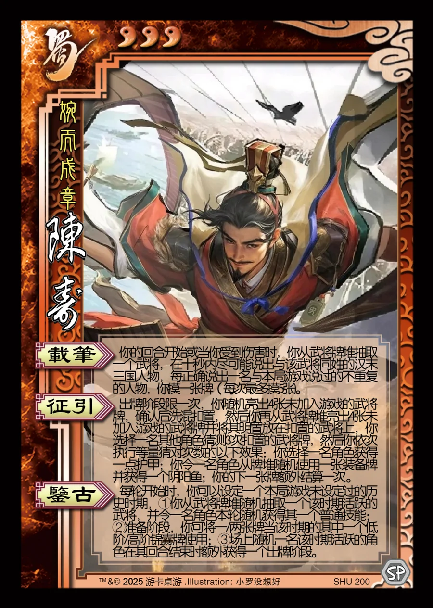

点击卡面查看大图
蜀
陈寿
♥3婉而成章
载笔
你的回合开始或当你受到伤害时，你从武将牌堆抽取一个武将，在十秒内尽可能说出与该武将同姓的汉末三国人物，每正确说出一名与本局游戏说过的不重复的人物，你摸一张牌（每次最多摸5张)。
征引
出牌阶段限一次，你随机亮出4张未加入游戏的武将牌，确认后洗混扣置，然后你再从武将牌堆亮出4张未加入游戏的武将牌并将其明置放在扣置的武将上，你选择一名其他角色猜测3次扣置的武将牌，然后你依次执行等量猜对次数的以下效果：你选择一名角色获得一点护甲；你令一名角色从牌堆随机使用一张装备牌并获得一个阴阳鱼；你的下一张牌额外结算一次 。
鉴古▶ 模拟器
每轮开始时，你可以设定一个本局游戏未设定过的历史时期，①你从武将牌堆随机抽取一个该时期活跃的武将，并令一名角色本轮随机获得其一个普通技能；②准备阶段，你可将一/两张牌当该时期的其中一个低阶/高阶锦囊牌使用；③场上随机一名该时期活跃的角色在其回合结束时额外获得一个出牌阶段。